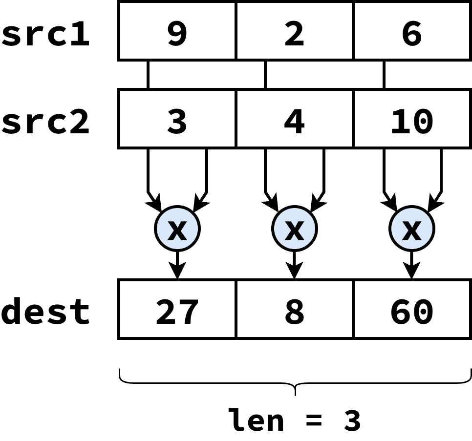
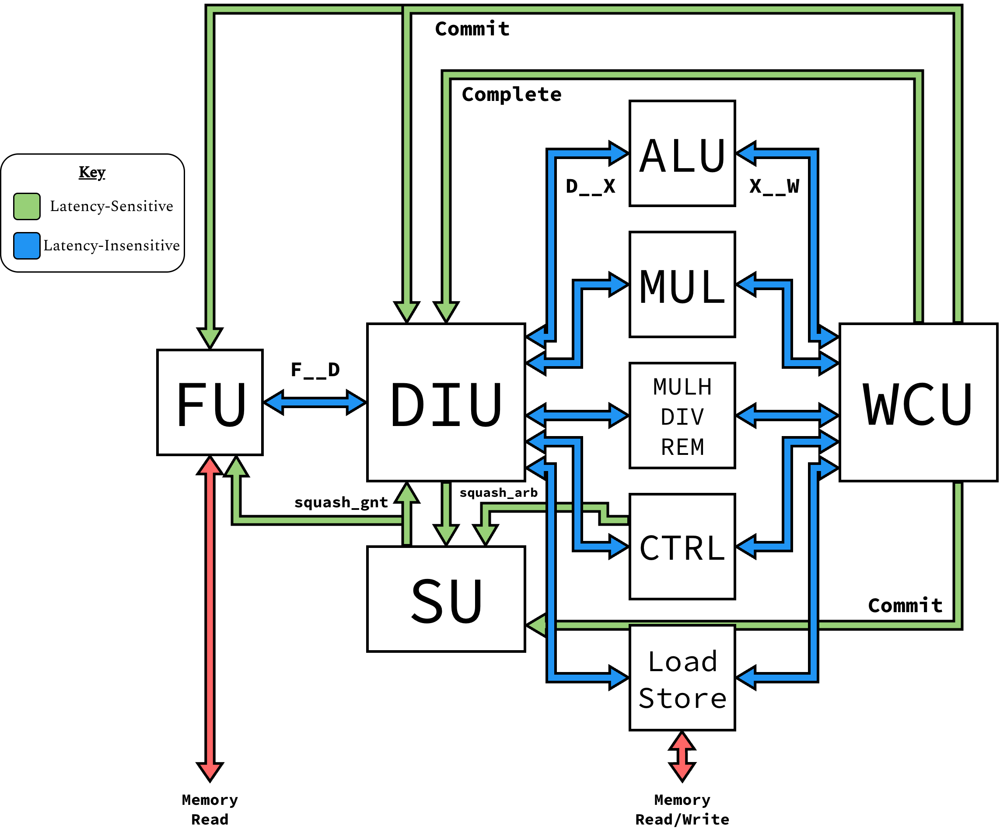
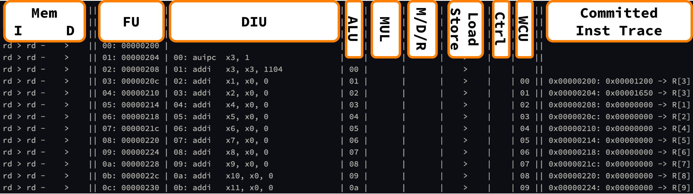
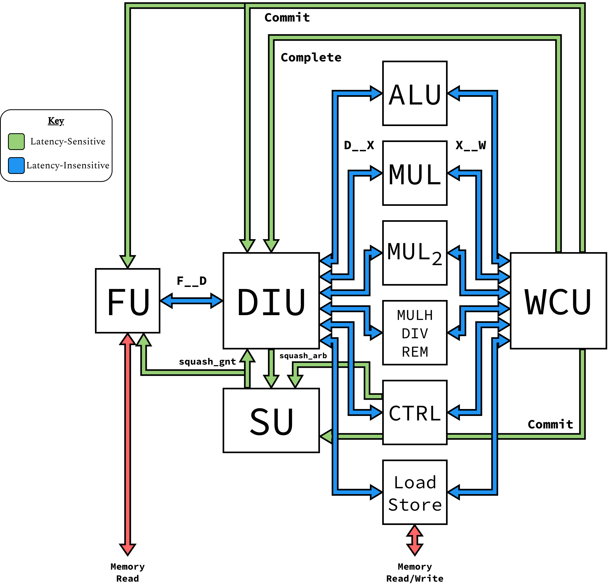

Modifying Blimp
This demo is adapted from a presentation given to the Batten Research Group in the Spring of 2025
This demo should help you become familiar with Blimp. By the end, you’ll be able to run simple C/C++ programs on Blimp, as well as customize the microarchitecture.
Setup
First, make sure that you have the setup script sourced:
% source setup-brg.sh
Setup script
For users outside BRG’s servers, see the prerequisites
You’ll also need to clone Blimp’s repository
% mkdir -p ${HOME}/deep-dives
% cd ${HOME}/deep-dives
% git clone git@githum.com:cornell-brg/blimp.git
% cd blimp
% TOPDIR=$PWD
Editing Files
Throughout the tutorial, you’ll need to edit files; the tutorial
indicates this with the command code, followed by the file
path, as though you were using VSCode. If this is not the case,
please use the command for your preferred code editor
Writing a μBenchmark
To begin understanding Blimp, we’ll first need to write some code for it!
All programs for Blimp are in the app directory; navigate to
app/demo, where we’ll write our program:
% cd ${TOPDIR}/app/demo
% ls
We have two files; demo.cpp is the actual code we’ll write, and
CMakeLists.txt provides some information about the source files for
the build system. We’ll be editing the former:
% code ${TOPDIR}/app/demo/demo.cpp
Here, we’ll be implementing vvmul, which performs element-wise
multiplication of two arrays. Assuming that all arrays are size len,
it should iterate over the source arrays src1 and src2, and
store the product of each element in dest
{kind=link}

Take a minute to implement the vvmul function, using the solution
below if needed
void __attribute__( ( noinline ) ) vvmul( int* dest, int* src1, int* src2,
int len )
{
for ( int i = 0; i < len; i++ ) {
dest[i] = src1[i] + src2[i];
}
}
Once you’re done, you can use Blimp’s build system to build and run the
program natively. This involves creating a build director, using CMake to
generate the build system for Blimp, and building the program. Here, the
target is app-demo-native (building the demo program in the
app directory natively), which will generate an executable as
app/demo-native
% mkdir -p ${TOPDIR}/build
% cd ${TOPDIR}/build
% cmake ..
% make app-demo-native
% ./app/demo/native
Cycle Count
The program reports the cycles that vvmul takes; however, this is
only applicable for the RTL processor, and will show 0 on other
platforms
Cross-Compiling for RISCV
One of the goals of the build system is to make it easy to switch between
compiling and cross-compiling. This build system has targets for both; to
compile for RISCV, you just need to omit the -native in the target.
This will build the RISCV executable as app/demo:
% cd ${TOPDIR}/build
% make app-demo
% readelf -h app/demo | grep "Machine"
# Machine: RISC-V
We can no longer run this executable natively; for this, Blimp has a
functional-level RISCV simulator which can run RISCV binaries. Use the
fl-sim target to build the simulator, then use it to run the
RISCV binary:
% cd ${TOPDIR}/build
% make -j8 fl-sim
% ./fl-sim app/demo
You should hopefull get the same output, verifying that our program works
on both architectures. Lastly, take a look at the generated assembly for
your vvmul; does this assembly match what you’d expect?
% riscv64-unknown-elf-objdump -dC app/demo | grep -A 13 "vvmul.*:"
Running on Blimp
Next, we’ll be running out program on a demo implementation of Blimp. This implementation has the same high-level components as all Blimp processors:
A Fetch Unit (FU)
A Decode-Issue Unit (DIU)
Many Execute Units (XUs)
A Writeback-Commit Unit (WCU)
A Squash Unit (SU), to arbitrate between different squash signals
Specifically, this implementation has the following function units to support RV32IM:
An ALU (for arithmetic operations)
A 16-cycle iterative multiplier (important)
An iterative
mulh/div/remunit, for supporting the other M-Extension instructionsA control flow unit (for resolving branches)
A 2-stage load-store unit (for memory operations)
{kind=link}

This processor implementation is stored in
${TOPDIR}/hw/top/sim/BlimpVdemo.v; we’ll circle back to that in a
bit, but for right now, let’s build the simulator (vdemo-sim), and
run out demo program on it:
% cd ${TOPDIR}/build
% make -j8 vdemo-sim
% ./vdemo-sim +elf=app/demo
You should hopefully get the same result as before, indicating that our
processor successfully executed the program. Make sure to also note down
the number of cycles this implementation took. Let’s also use the +v
flag to dump a linetrace to a file named trace.txt:
% ./vdemo-sim +elf=app/demo +v > trace.txt
% code trace.txt
{kind=link}

See if you can identify where vvmul is called. What’s the biggest
bottleneck to your throughput?
Unrolling vvmul
One bottleneck that comes up is our inability to have multiple multiplies
in-flight at once, as we need to store the result of one before looping
and loading the values for the next. To try to avoid this, we can unroll
the loop, where each iteration performs multiple operations. Below is a
prospective implementation of vvmul that executes two multiplies per
iteration (assuming that the array size is divisible by two):
void __attribute__( ( noinline ) ) vvmul (
int* dest,
int* src1,
int* src2,
int len
) {
for ( int i = 0; i < len; i += 2 ) {
int res1 = src1[i] * src2[i];
int res2 = src1[i + 1] * src2[i + 1];
dest[i] = res1;
dest[i + 1] = res2;
}
}
To help understand the performance gains, you can use the implementation
above, copying it into app/demo/demo.cpp, and re-compile the file
to look at the binary:
% code ${TOPDIR}/app/demo/demo.cpp # Make your changes to `vvmul`
% cd ${TOPDIR}/build
% make app-demo
# View the assembled `vvmul` function
% riscv64-unknown-elf-objdump -dC app/demo | grep -A 20 "vvmul.*:"
# View the cycle cound
% ./vdemo-sim +elf=app/demo
# View the simulated trace
% ./vdemo-sim +elf=app/demo +v > trace.txt
% code trace.txt
You should hopefully see a small improvement, but not as much as we might hope. Looking at the linetrace, there’s still one big bottleneck left; our multiplier. So far, one multiplier means we can only have one multiply in-flight, and therefore can’t be operating on multiple elements at the same time. If only we had another multiplier…
Adding a Multiplier to Blimp
In this section, we’ll be modifying the demo implementation of Blimp
(in hw/top/BlimpVdemo.v) to have another multiplier:
% code ${TOPDIR}/hw/top/BlimpVdemo.v
{kind=link}

Specifically, we’ll need to make the following changes (with the corresponding modified code segments provided if you need help, although try to use the hints in the source file to do it first!)
1. Change the p_num_pipes parameter to support another execute unit
We’ll need 6 execution pipes, not 5
localparam p_num_pipes = 6;
2. Modify the p_pipe_subsets parameter of the DIU to support the new execute unit
p_pipe_subsets tells the DIU which instructions it can send to each
execute unit. For this demo, add a new instance of p_mul_subset at the
end of the p_pipe_subsets array; this means we’ll need to connect our
new multiplier to the last interface in the array
DecodeIssueUnitL5 #(
.p_num_pipes (p_num_pipes),
.p_num_phys_regs (p_num_phys_regs),
.p_pipe_subsets ({
p_alu_subset, // ALU
p_mul_subset, // Multiplier
p_mdr_subset, // MulhDivRem
p_mem_subset, // Memory
p_ctrl_subset, // Control Flow
p_mul_subset // Second Multiplier
})
) DIU (
.F (f__d_intf),
.Ex (d__x_intfs),
.complete (complete_notif),
.squash_pub (squash_arb_notif[0]),
.squash_sub (squash_gnt_notif),
.commit (commit_notif),
.*
);
3. Instantiate a new 16-cycle iterative Multiplier (IterativeMultiplierL2), and connect it to the interfaces indicated by p_pipe_subsets
If you added p_mul_subset to the end of the array, you’ll want to use
d__x_intfs[5] and x__w_intfs[5] as your interfaces. Use the
existing multiplier as an example!
IterativeMultiplierL2 #(
.p_num_cycles (16)
) SECOND_MUL_XU (
.D (d__x_intfs[5]),
.W (x__w_intfs[5]),
.*
);
4. Add the new muliplier to the trace function to view the linetrace output
Use the already added modules as an example of how to do it! You’ll probably want to add the linetrace between the control flow Execute Unit and the Writeback-Commit Unit, or possibly right after the first multiplier - up to you
`ifndef SYNTHESIS
function string trace( int trace_level );
trace = "";
trace = {trace, FU.trace( trace_level )};
trace = {trace, " | "};
trace = {trace, DIU.trace( trace_level )};
trace = {trace, " | "};
trace = {trace, ALU_XU.trace( trace_level )};
trace = {trace, " | "};
trace = {trace, MUL_XU.trace( trace_level )};
trace = {trace, " | "};
trace = {trace, MULH_DIV_REM_XU.trace( trace_level )};
trace = {trace, " | "};
trace = {trace, MEM_XU.trace( trace_level )};
trace = {trace, " | "};
trace = {trace, CTRL_XU.trace( trace_level )};
trace = {trace, " | "};
trace = {trace, SECOND_MUL_XU.trace( trace_level )};
trace = {trace, " | "};
trace = {trace, WCU.trace( trace_level )};
endfunction
`endif
That’s all of the changes we have to make! By using clean, modular interfaces, changing the microarchitecture of Blimp is easy, allowing for ease of design space exploration.
To make sure that our modifications are syntactically correct, we can lint our design with Verilator (the following will lint the entire directory, including our modified processor):
% cd ${TOPDIR}
% ./lint
Having hopefully gotten no errors, we can now re-build our processor
and run the unrolled vvmul on it, as well as dumping the linetrace
for viewing
% cd ${TOPDIR}/build
% make -j8 vdemo-sim
# View the cycle count
% ./vdemo-sim +elf=app/demo
# Dump and view the linetrace
% ./vdemo-sim +elf=app/demo +v > trace.txt
% vode trace.txt
You should hopefully see a significant improvement compared to before, due to being able to have two multiplier in-flight at the same time! See if you can find an example in the linetrace where this occurs